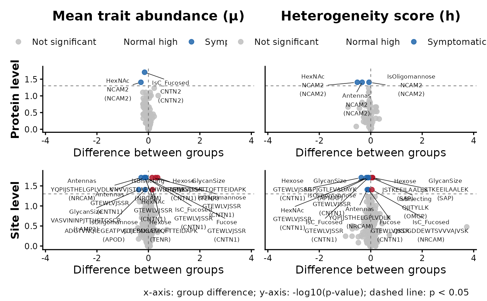

Visualize differential glycan trait abundance and heterogeneity results as volcano plots for protein- and site-level features.
plot_hscore_volcano(res, p_cutoff = 0.05, label_size = 2.3, max_labels = 15)A data frame returned by analyze_hscore_changes
Numeric p-value cutoff used to define significant points. Default is 0.05.
Numeric text size for feature labels. Default is 2.3.
Maximum number of significant features to label in each panel. Features with the smallest p-values are labeled first. Default is 15.
A ggplot2/patchwork object. The x-axis shows group
difference, the y-axis shows `-log10(p-value)`, and colors indicate
significance and direction of change.
res <- readRDS(system.file("extdata", "output_toyexample.rds", package = "glycoTraitR"))
#> Warning: cannot open compressed file '', probable reason 'No such file or directory'
#> Error in gzfile(file, "rb"): cannot open the connection
plot_hscore_volcano(res)
